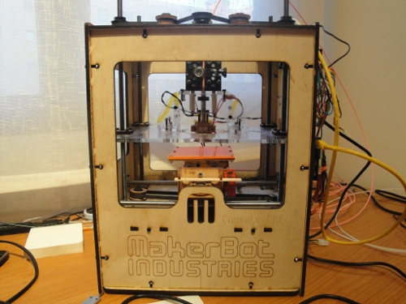

En un post previo
os comentaba nuestra nueva adquisición: el extruder MK4.
Sin embargo, tras el éxito inicial, aparecieron los mismos problemas que al principio:
el engranaje del motor que aprieta el cable de plástico hacía una mella muy grande,
de vez en cuando, perdiendo la tracción y dejando de echar plástico.
Estuvimos haciendo diferentes pruebas, pero casi siempre acababan en fracaso.

Pero… al poco tiempo los de Makerbot desarrollaron el extruder MK5, así que decidimos darle una última oportunidad. Nos lo compramos, lo montamos y… ¡Espectacular!

* Es mucho más fácil de montar
* Es muy fácil de introducir el filamento de plástico, incluso se puede hacer durante la impresión
* Tracción ajustable. Se acabó la pérdida de tracción. Con un tuerca se aumenta o disminuye la presión
(girándola con la mano)

Ahora se pueden imprimir muchas piezas, una tras otra, sin tener que estar re-ajustando la máquina o solucionando problemas. Algunas de las que hemos impreso: Dodecaedro, Letras en un bloque, Letras sueltas, Ruedas para el Skybot, Fichas de casino….
Y por supuesto, ahora la calidad es mucho más buena. Como muestra este Darth Vader 😉

No es un Darth-Vader, es un Darth-Agus 😉